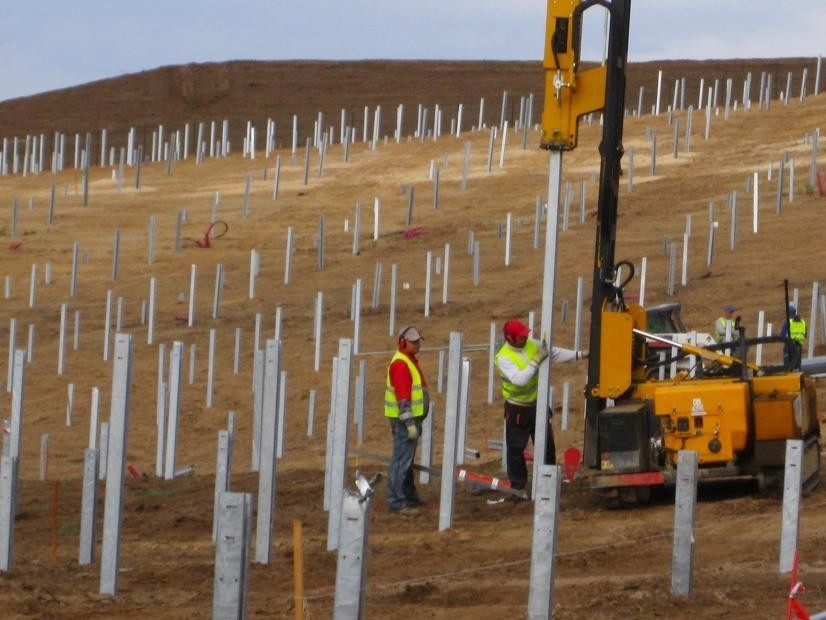
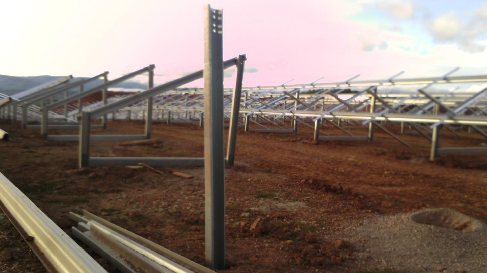

L’entreprise assure des missions d'études et de contrôle dans le domaine de la géotechnique: la recherche de carrières souterraines le diagnostic de pollution (avec prélèvements de sols lors de ventes) la résistance du sol et la nature du terrain (lors de construction de villas, immeubles, ponts, tunnels, etc.) le diagnostic catastrophe naturelle
Le sondage est un examen du sous-sol qui permet de déterminer la nature et les caractéristiques mécaniques, physiques du terrain afin de prévoir son comportement lors de la réalisation de votre projet.
Ce travail pointu destiné à mener vos études géotechniques, demande à être réalisé par un expert de manière à : poser des instruments de mesures : piézomètres, inclinomètres, etc.
faire des tests de perméabilité via des essais Lugeon, Porcher ou Lefranc, aussi bien par pompage que par injection
d'eau à débit variable.
Selon l'encombrement vertical nous employons pour l'ensemble des forages décrits des tiges de 1m, 1,2m et 1,8m. L’entreprise effectue des sondages géognostiques tant par destruction du noyau qu’avec carottage continu, en se chargeant de la rédaction de rapports stratigraphiques et géotechniques.
Les sondages des terrains ont aussi pour fonction de tester la porosité, le type de roche, la quantité d’eau et la résistance du sous-sol, pour ce, nous réalisons des carottages simples et doubles.
Emploi de pieux et techniques pour prévenir les éboulements de terrain et affaissements
Le pieu de fondation est caractérisé par une action profonde et indirecte qui permet de transmettre une partie de la charge verticale par frottement le long de la surface latérale des fondations.
Ce système présente de nombreux avantages comme celui de réduire le risque d’éboulements de terrain ou d’affaissements structurels à long terme, tout en augmentant donc la résistance des strates plus profondes du terrain. GEO SERVIZI intervient dans la réalisation de :
• consolidation de bâtiments et de terrains
• stabilisation de pans à risque d’éboulement par déboisement et purge
• positionnement de grilles de protection antichute de pierres
• exécution de spritz-béton
• pose de micropieux et tirants
• exécution de battage de pieux
L’exploitation des zones résiduaires tout comme la transformation structurelle de constructions existantes, les variations hydrauliques peuvent avoir des répercussions sur la stabilité des fondations des bâtiments. Il existe des travaux qui permettent de consolider le terrain et d’en augmenter la stabilité et sécurité.
La pose de pieux ou de micropieux est l’une de ces interventions de consolidation.

Berlinoises
Le professionnalisme et l’expertse de Geo Servizi sont à votre disposition pour la réalisations des berlinoises, utilisées essentiellement dans le but de soutenir le front de terrassement de structures préexistantes afin d’en éviter l’affaissement.
À travers des rideaux de micropieux verticaux, l’on réalise une structure de soutien, comme alternative à la réalisation d’ouvrages de soutènement de terrains non adaptés aux terrassements et perforations et ce, à cause de la présence de pierres sous forme de strates ou blocs, ainsi que dans les zones où la morphologie du terrain et les espaces ne permettent pas le manoeuvrage de machines et équipements traditionnels.
Les berlinoises peuvent être réalisées aussi en cas de terrassements de hauteurs élevées, en associant, aux micropieux, la présence de tirants. L’on associe les micropieux aux tirants en cas de terrassements proches d’ouvrages de viabilité importants et/ou de profondeurs élevées à proximité de bâtiments.
Les berlinoises sans tirants sont, quant à elles, utilisées lorsque la profondeur de creusement est réduite ou en présence de charges superficielles limitées, ce qui permet ainsi de creuser à proximité de bâtiments sans risque de les endommager.